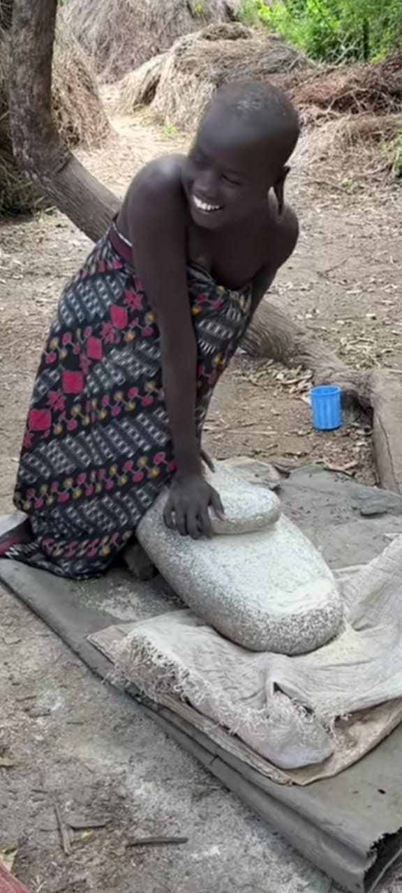
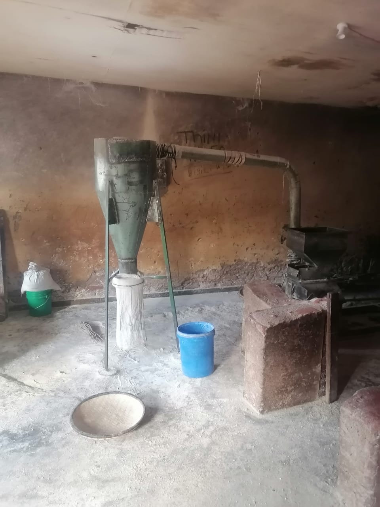
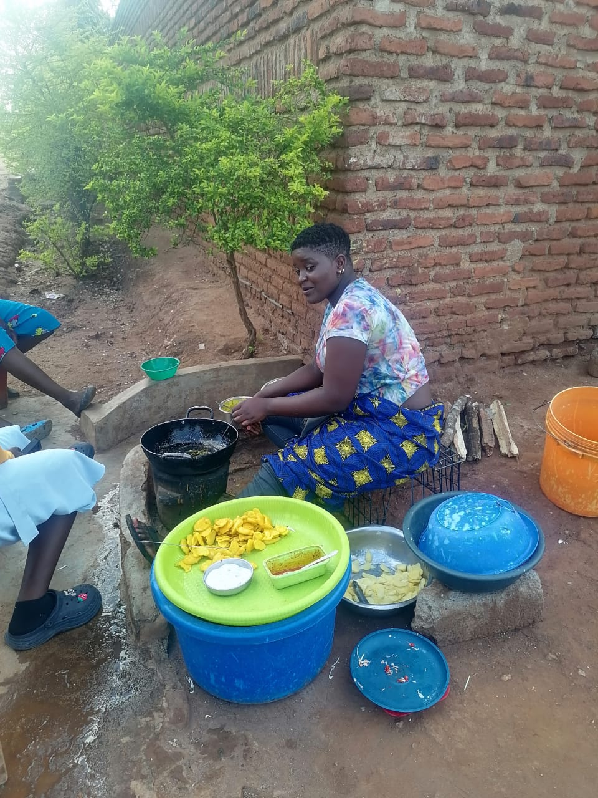
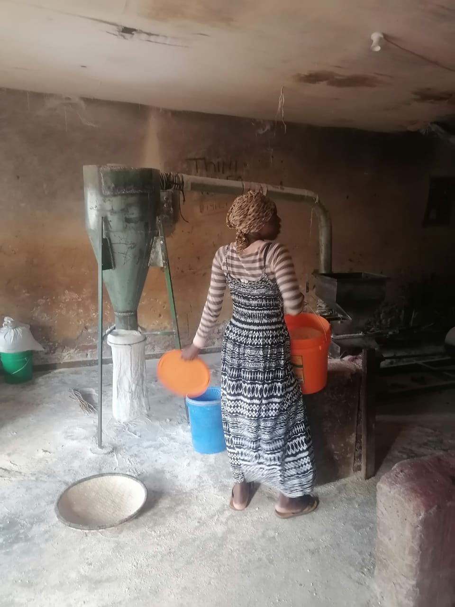
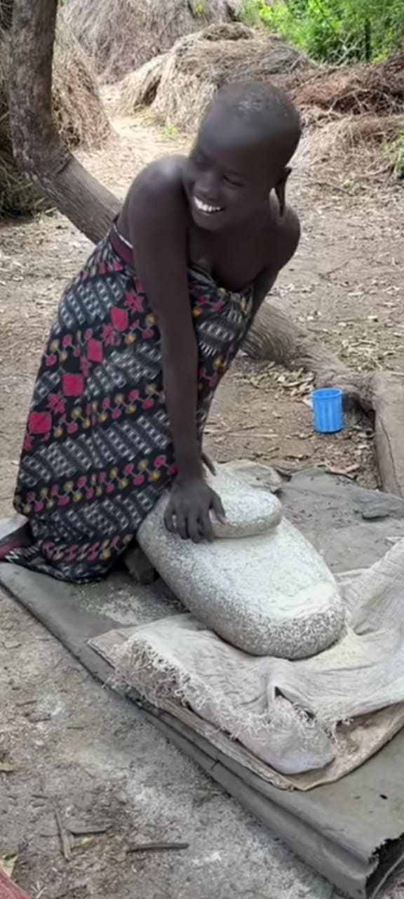
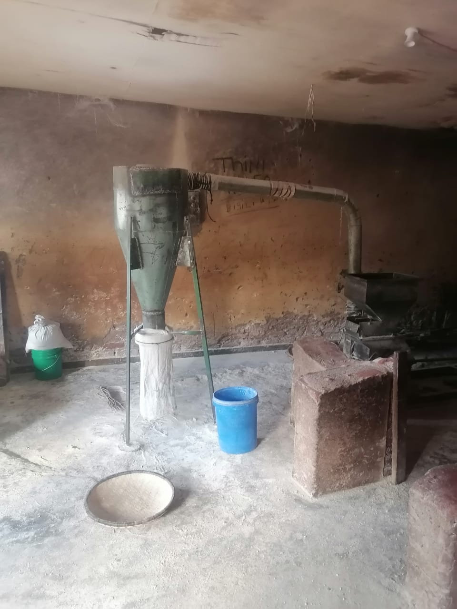
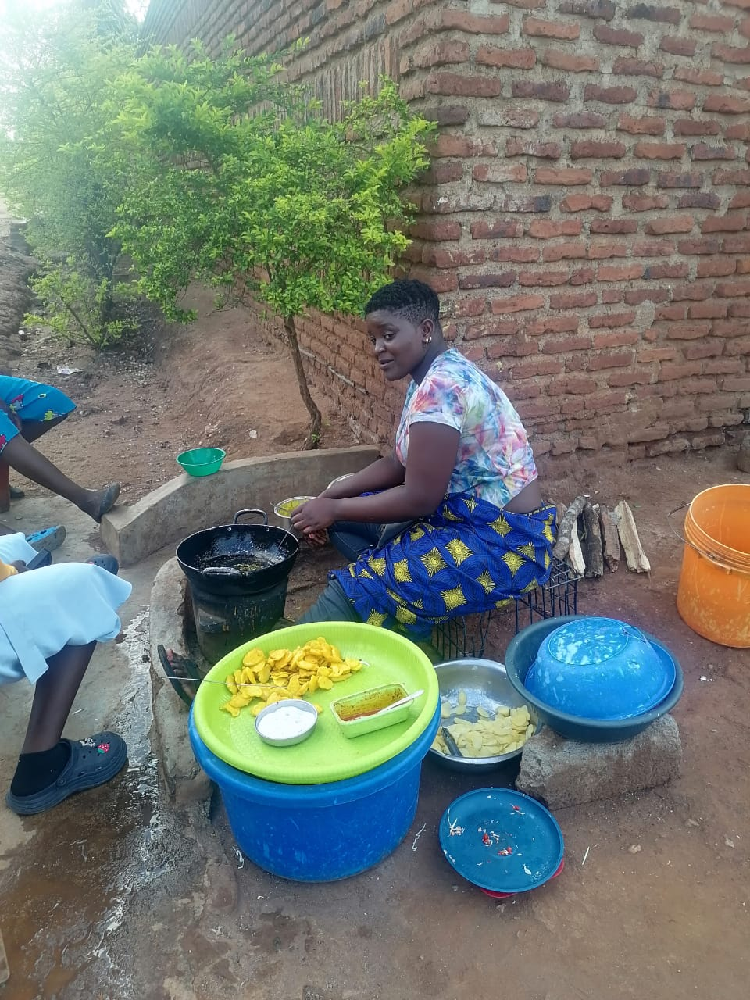
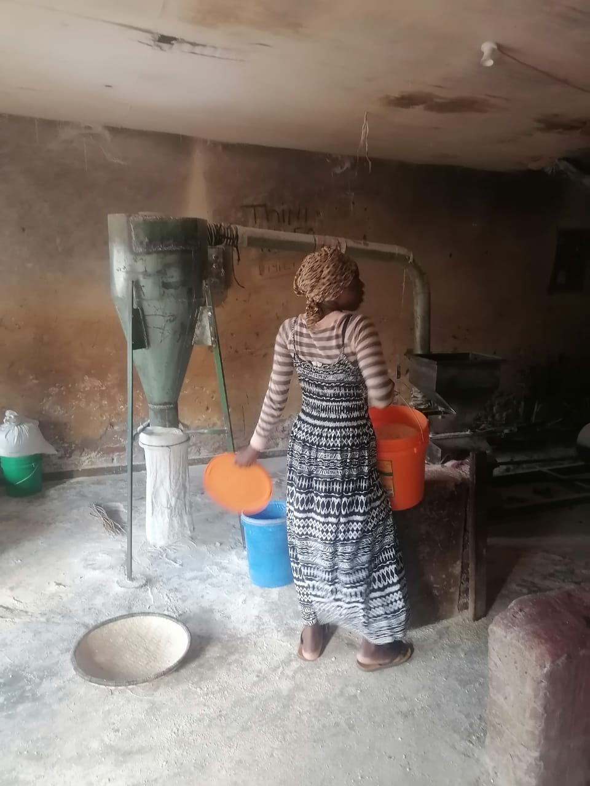

Milling Stone

Morden Milling

Pot
Cooker

Food
Preparations

Maize
Milling
Nsima is mostly made from maize floor, and stone mill is
the first way people used to grind maize into floor, and has been in use for age; today mill stone is
still used in some parts of Africa in food preparations.Today because the world has been mordenized women
take
their maize to the maize mill like this to make floor.
This is the common way of milling maize in Malawi,
people find it cheaper to make maize
floor this way than actually buying it from the shop.
The use of charcoal and firewood, like in the
picture above, is the most common way of cooking food in Malawi and Africa as a whole. In the picture
the women are cooking what we call "zigege", it is made of potato and coverd with wheat-floor which is
mixed with some spice of your choise.
Fufu is a pounded meal found in West African cuisine. It is a Twi word
that originates from the Akans in Ghana. Although the original ingredients for fufu are boiled cassava,
plantains, and cocoyam, it is also made in different ways in other West African countries. In Ghana, Ivory Coast
and Liberia, they use the method of separately mixing and pounding equal portions of boiled cassava with green
plantain or cocoyam, or by mixing cassava/plantains or cocoyam flour with water and stirring it on a stove.

Milling Stone

Morden Milling

Pot
Cooker
Food
Preparations

Maize
Milling